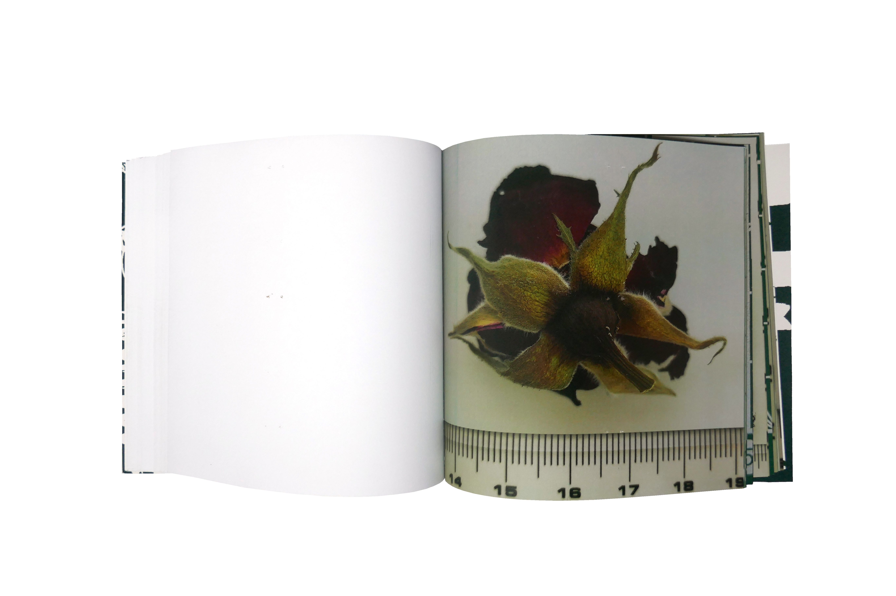
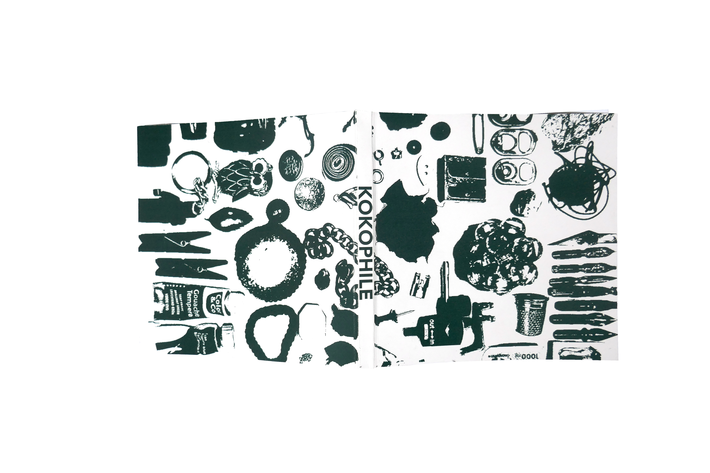
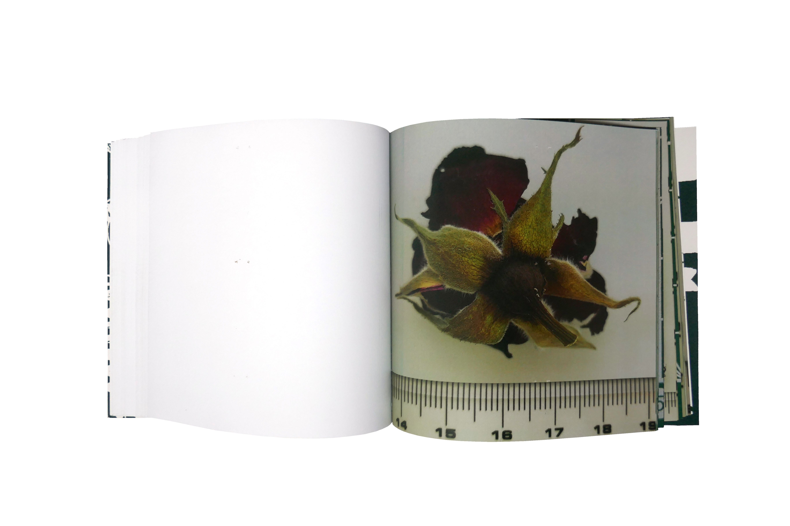
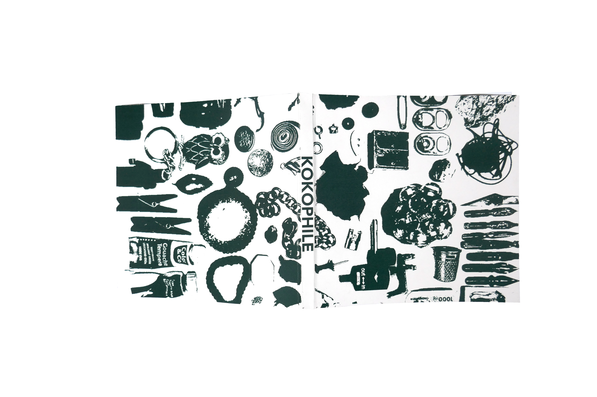

Ce projet a pour but de présenter la collection d'un kokophile.
Koko est un mot finnois qui signifie taille. Un kokophile est un donc un collectionneur d'objet qui respectent une certaine taille et pour ce projet il s'agit des objets de moins de quatre centimètres. Il y a ici un inventaire de plusieurs objets qui rentre dans cette consigne de taille.
Pour trouver les affiches de cette collection cliquer ici


 


